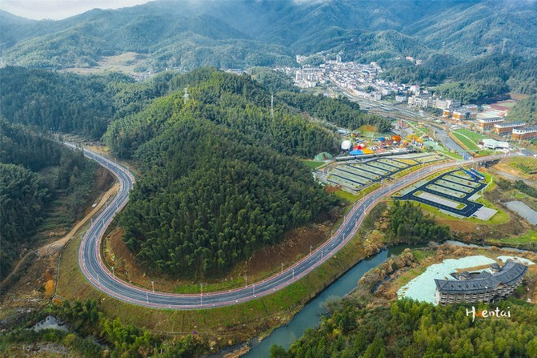
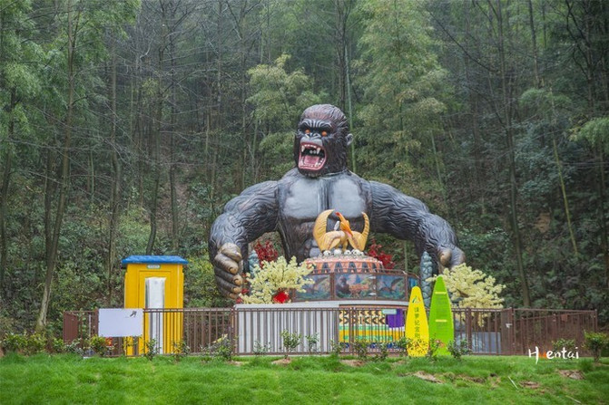
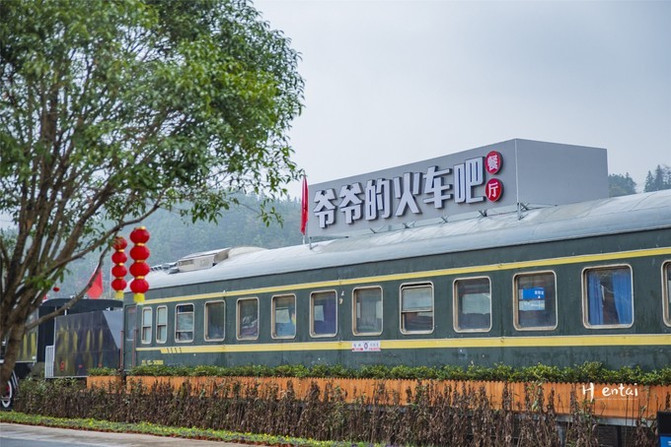

发表于 2021-03-16 22:41
南昌作为江西省会，是一座历史悠久、文化底蕴的城市。当然旅游资源也是特别的丰富！朋友说
一起去南昌玩吧，玩三天！我欣然接受，但后来我掰手指算了一下，想到的有南昌气势磅礴的滕王
阁，新晋的“网红景点”万寿宫，神秘的海昏侯墓遗址，以及“秋水共长天一色”的秋水广场和国内
第一高的“南昌之星”摩天轮。就算再加上八一广场，满打满算也玩不了三天吧？朋友又说：我们去
湾里，这里能玩好几天！南昌湾里，可以说是南昌人的“中心花园”，这里雨量充沛，日照丰硕，
有国家重点风景名胜区梅岭国家森林公园为首的诸多自然景区，也有像江西明清古民居博览园这
样的历史文化景区。丰富的旅游资源就是天然的旅游胜地，于是南昌三日游就这样愉快的成行了！
 湾里可以玩的东西很多，因为朋友带了小孩，所以我们的路线设计偏亲子和研学，俗话说的好：读万卷书不如行万里路。在我看来，现在的孩子“竞争激烈”，既要读得万卷书，也要行过万里路才行！我们三日的行程如下：
DAY1：常州-南昌，南昌租车自驾到湾里，琴源山庄（晚餐、住宿），玖点拾光音乐酒吧小聚；DAY2：梅岭时光亲子乐园、隐花堂民宿、书店，明清古民居博览园（参观及午餐），东昌村采摘、半岭自然村酿酒坊、竹海明珠景区，在芙山房民宿（晚餐、住宿）；
DAY3：梅岭漂流、中小学实践基地、林恩茶研园（参观及午餐）、太阳谷，返程。
南昌作为省会城市，交通十分便利，各地来这里的大交通选择丰富，可以飞机，也可以高铁，近一些的还能自驾。在湾里旅游，那就必定要选择自驾，这里山路崎岖却不险陡，路况好红绿灯少，是非常完美的的自驾胜地。真羡慕南昌人周末没事就可以来这里过过车瘾！我们是高铁到达南昌西站后在某嗨平台租了辆SUV，然后直接自驾到湾里，大约20KM路程。
相信每一个孩子都会喜欢梅岭时光亲子乐园，大人们也可以趁机来找回童心。它是南昌一座新的重量级主题公园。 值得一提的是，虽然它是一座人造的主题公园，但它的打造却是对区域内山体、湿地、溪流等资源环境进行整体生态规划，人与自然在这里显得十分和谐。
据说梅岭时光亲子乐园的总投资约在八千万元，有5大类38项游玩项目。入园后就可以看到丰富的游乐设施，这些项目并不单一，选择性很强。总结一下：惊喜刺激的项目不多，趣味休闲的项目为主。特别适合亲子家庭过来打卡。
湾里可以玩的东西很多，因为朋友带了小孩，所以我们的路线设计偏亲子和研学，俗话说的好：读万卷书不如行万里路。在我看来，现在的孩子“竞争激烈”，既要读得万卷书，也要行过万里路才行！我们三日的行程如下：
DAY1：常州-南昌，南昌租车自驾到湾里，琴源山庄（晚餐、住宿），玖点拾光音乐酒吧小聚；DAY2：梅岭时光亲子乐园、隐花堂民宿、书店，明清古民居博览园（参观及午餐），东昌村采摘、半岭自然村酿酒坊、竹海明珠景区，在芙山房民宿（晚餐、住宿）；
DAY3：梅岭漂流、中小学实践基地、林恩茶研园（参观及午餐）、太阳谷，返程。
南昌作为省会城市，交通十分便利，各地来这里的大交通选择丰富，可以飞机，也可以高铁，近一些的还能自驾。在湾里旅游，那就必定要选择自驾，这里山路崎岖却不险陡，路况好红绿灯少，是非常完美的的自驾胜地。真羡慕南昌人周末没事就可以来这里过过车瘾！我们是高铁到达南昌西站后在某嗨平台租了辆SUV，然后直接自驾到湾里，大约20KM路程。
相信每一个孩子都会喜欢梅岭时光亲子乐园，大人们也可以趁机来找回童心。它是南昌一座新的重量级主题公园。 值得一提的是，虽然它是一座人造的主题公园，但它的打造却是对区域内山体、湿地、溪流等资源环境进行整体生态规划，人与自然在这里显得十分和谐。
据说梅岭时光亲子乐园的总投资约在八千万元，有5大类38项游玩项目。入园后就可以看到丰富的游乐设施，这些项目并不单一，选择性很强。总结一下：惊喜刺激的项目不多，趣味休闲的项目为主。特别适合亲子家庭过来打卡。

景区内还有一些具有地方特色的项目让我眼前一亮，比如做成瓷器造型的旋转座椅。要知道天下瓷器唯景德镇最为深入人心，出现一个这样的项目就很江西。

接下来要隆重介绍下景区内的“梅岭仙子号”观光小火车，它可是景区内的明星网红。坐上这列小火车可以沿着铺设的铁轨一路打卡景区的好风光，春天里繁花似锦，游客们总是希望车可以开的慢一些，这样照片就能拍的更多一些。

景区内的游玩项目丰富，就不一一赘述了。这里建议游玩半天到一天时间，园区内有一处火车餐厅可以解决餐食问题。景区票价也分为多种套餐，网络上预订：单人票价88元/人，亲子票一大一小148元/组；家庭票两大一小188元/组。营业时间：9：30-17：30。